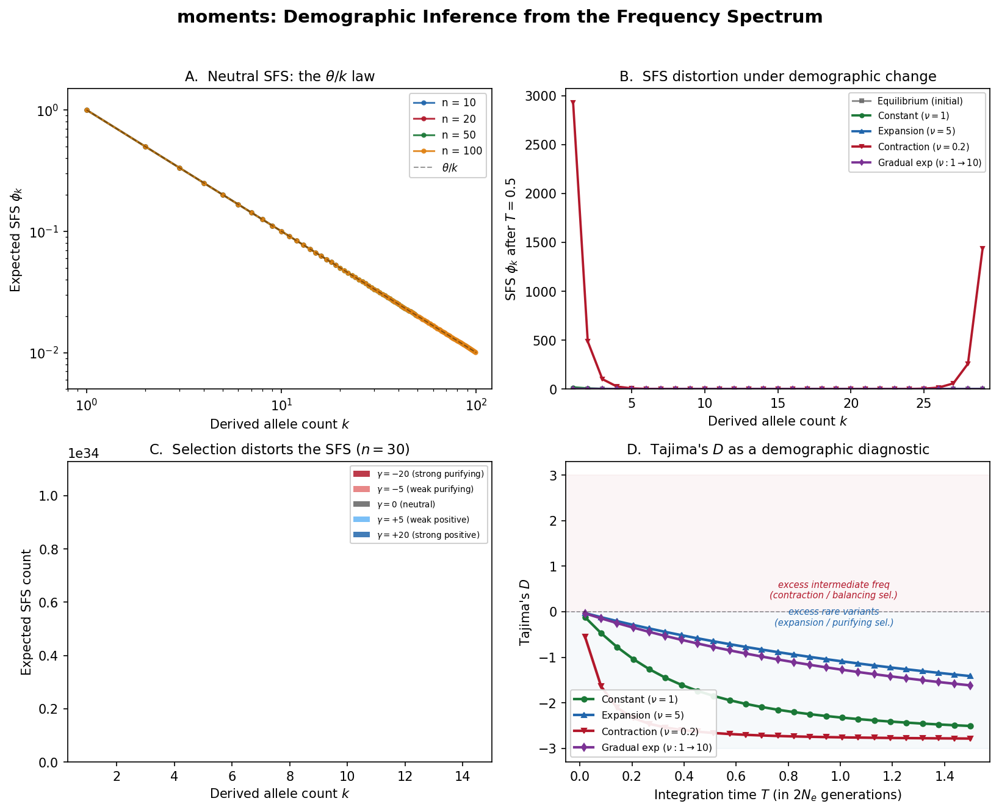

Overview of moments
Before assembling the watch, lay out every part and understand what it does.
{kind=link}

moments at a glance. Panel A: The neutral site frequency spectrum for different sample sizes, showing the classic \(\theta/k\) pattern. Panel B: SFS evolution under drift – how the neutral spectrum deforms under population expansion vs contraction. Panel C: Selection’s effect on the SFS – positive selection shifts mass toward high frequencies, negative selection toward low frequencies. Panel D: Tajima’s D under expansion, constant size, and contraction, illustrating how summary statistics capture demographic signals.
What Does moments Do?
Given DNA sequence data from one or more populations, moments infers the
demographic history that produced the observed patterns of genetic variation.
Concretely, moments asks: What history of population size changes, splits,
and migrations would produce a frequency spectrum that looks like the one we
observe?
Think of a fine mechanical watch. A watchmaker can deduce every gear ratio
inside the case simply by studying the positions of the hands on the dial.
moments works the same way: it reads time from hand positions without
ever opening the case. The “hands” are the entries of the site frequency
spectrum; the “gears” are the evolutionary forces – drift, mutation, selection,
migration – that turned those hands to their current positions.
From the inferred history, you learn:
Population sizes through time – expansions, contractions, bottlenecks
Divergence times – when populations split from each other
Migration rates – ongoing gene flow between populations
Selection pressures – the distribution of fitness effects of new mutations
The Big Picture: Why Allele Frequencies?
Imagine you sequence 100 chromosomes from a population. At each variable site, you count how many chromosomes carry the derived (mutant) allele: 1 out of 100? 17 out of 100? 99 out of 100?
The distribution of these counts is the site frequency spectrum (SFS). It turns out to contain a remarkable amount of information about the population’s history:
A population that recently expanded has an excess of rare variants (many new mutations arose in the large population but haven’t had time to drift up)
A population that went through a bottleneck has a deficit of rare variants and an excess of intermediate-frequency variants
Migration between populations creates shared variation at similar frequencies
Selection distorts the spectrum in predictable ways
Probability Aside – Why a histogram is enough
At first it seems wasteful to throw away the genomic positions of variants and keep only their counts. The justification comes from the theory of sufficient statistics. Under the Poisson Random Field model (see Demographic Inference), each segregating site contributes independently to the likelihood. The SFS captures all the information those independent sites carry about the demographic parameters – no additional power is gained by recording which site has which count. In the language of the watch metaphor, the dial face shows you everything you need; you do not also have to listen to the ticking.
The challenge is going from the observed spectrum to the history that produced it.
That’s what moments does.
Terminology
Before diving into the gears, let’s nail down the terminology precisely.
Term |
Definition |
|---|---|
SFS |
Site Frequency Spectrum: a histogram counting how many SNPs have each possible derived allele count in the sample |
Derived allele |
The mutant allele (as opposed to the ancestral allele inherited from the common ancestor with an outgroup) |
Folded SFS |
SFS using minor allele counts instead of derived allele counts (no need to know which allele is ancestral) |
\(n\) |
Haploid sample size (number of chromosomes sampled) |
\(\theta\) |
Population-scaled mutation rate: \(4N_e \mu\) (per-site) or \(4N_e \mu L\) (genome-wide) |
\(N_e\) |
Effective population size – the size of an idealized Wright-Fisher population with the same rate of genetic drift |
\(\nu\) |
Relative population size: \(N(t) / N_{\text{ref}}\), where \(N_{\text{ref}}\) is the reference \(N_e\) |
\(T\) |
Time, measured in units of \(2N_e\) generations |
\(\gamma\) |
Population-scaled selection coefficient: \(2N_e s\) |
\(h\) |
Dominance coefficient (heterozygote fitness = \(1 + 2hs\)) |
\(M_{ij}\) |
Scaled migration rate: \(2N_e m_{ij}\), where \(m_{ij}\) is the fraction of population \(i\) that are migrants from population \(j\) each generation |
Why these units?
Population genetics parameters are always scaled by the effective population size \(N_e\). This isn’t just convention – it reflects a deep mathematical fact: the Wright-Fisher diffusion (the continuous-time limit of the Wright-Fisher model) naturally operates on the timescale of \(2N_e\) generations. A mutation rate of \(\mu = 10^{-8}\) per site per generation in a population of \(N_e = 10{,}000\) gives \(\theta = 4 \times 10{,}000 \times 10^{-8} = 4 \times 10^{-4}\). This is the “natural” scale at which drift and mutation balance.
Calculus Aside – Scaling and non-dimensionalization
The practice of absorbing \(N_e\) into every parameter is an instance of non-dimensionalization, a technique you may have seen in fluid dynamics (Reynolds number) or heat transfer (Fourier number). By dividing time by \(2N_e\) and multiplying rates by \(2N_e\), the resulting equations contain fewer free constants and expose the ratios that actually govern the dynamics. In the watch metaphor, it is like measuring gear teeth by their ratio rather than their absolute number – the ratio is what determines the hand speed.
The Key Innovation: Moments vs. Diffusion
To understand why moments exists, you need to understand what came before it.
The classical approach (dadi):
The allele frequency \(x\) at a single locus in a population evolves according to the Wright-Fisher diffusion equation – a partial differential equation (PDE) governing the probability density \(\phi(x, t)\):
To compute the expected SFS, dadi discretizes the frequency axis \(x \in [0, 1]\)
onto a grid and solves this PDE numerically. This works well for one or two populations,
but the grid size grows exponentially with the number of populations: for \(p\)
populations with \(n\) grid points each, you need \(n^p\) points.
Calculus Aside – PDEs vs. ODEs
A partial differential equation (PDE) involves derivatives with respect
to more than one independent variable (here, both frequency \(x\) and
time \(t\)). Solving a PDE numerically requires discretizing the
continuous variable \(x\) onto a grid, which is where the exponential
blowup comes from. An ordinary differential equation (ODE) involves
derivatives with respect to a single variable (time). By collapsing the
frequency axis into a finite list of SFS entries, moments converts the
PDE into a system of ODEs – one equation per SFS bin – sidestepping the
grid entirely.
The moments approach:
Instead of tracking the full frequency distribution, moments asks: What if we
directly tracked how each SFS entry changes over time?
The SFS entry \(\phi_j\) (expected number of sites with derived allele count \(j\)) satisfies its own ordinary differential equation:
This is a system of coupled ODEs – one equation per SFS entry. No frequency grid, no PDE, no numerical diffusion. The SFS entries are the moments of the frequency distribution, and they can be evolved directly.
Returning to the watch metaphor: dadi tries to model the full shape of every
gear tooth (the continuous density \(\phi(x,t)\)). moments skips the
tooth-level detail and instead writes down the equations governing the gear
train – the ODEs that describe how each hand on the dial advances. The result
is the same predicted dial reading, but the calculation is simpler and scales
better to multi-hand (multi-population) watches.
Why this matters:
No grid artifacts. PDE solvers introduce numerical diffusion from the grid. Moment equations are exact (to the order of the moment closure).
Better scaling. The system size is the number of SFS entries, not \(n^p\) grid points.
Cleaner math. Each ODE term has a clear biological interpretation.
We’ll derive these equations from scratch in The Moment Equations.
Parameters
moments takes the following parameters:
Parameter |
Symbol |
Meaning |
|---|---|---|
Mutation rate |
\(\theta = 4N_e\mu\) |
Population-scaled mutation rate per site |
Selection coeff. |
\(\gamma = 2N_e s\) |
Population-scaled selection coefficient |
Dominance |
\(h\) |
Heterozygote effect relative to homozygote (default 0.5 = additive) |
Population sizes |
\(\nu_i(t)\) |
Relative sizes as functions of time |
Migration rates |
\(M_{ij}\) |
Scaled migration matrix entries |
Integration time |
\(T\) |
Duration of each epoch in \(2N_e\) generations |
The Flow in Detail
Here’s how the pieces connect for a typical inference:
1. Parse VCF -> compute observed SFS
|
v
2. Define demographic model
(e.g., two-epoch, isolation-with-migration)
|
v
3. For candidate parameters theta:
+---> Start from equilibrium SFS
| |
| v
| Integrate moment equations
| through demographic epochs
| (size changes, splits, migration)
| |
| v
| Get model SFS
| |
| v
| Compute log-likelihood:
| L = sum [D_i log(M_i) - M_i]
| |
+----- Optimizer updates theta
|
v
4. Return best-fit parameters + uncertainty
In watch terms, Step 1 reads the current hand positions (the observed SFS). Step 2 blueprints the gear train (the demographic model). Step 3 winds a candidate watch and compares its predicted hand positions to the observed ones. Step 4 reports which gear sizes (demographic parameters) make the predicted dial match the real one most closely – adjusting parameters until the predicted dial matches observation.
Probability Aside – The Poisson Random Field
The log-likelihood in Step 3 assumes each SFS entry \(D_j\) is drawn from a Poisson distribution with mean \(M_j\). This is the Poisson Random Field (PRF) model of Sawyer and Hartl (1992). The Poisson approximation is valid when mutations are rare and sites are independent – conditions that hold under the infinite-sites mutation model. We will derive and justify the PRF likelihood in Demographic Inference.
Ready to Build
You now have the high-level blueprint. In the following chapters, we’ll build each gear from scratch:
The Site Frequency Spectrum – The data: what the SFS is and why it encodes history. In watch terms, this chapter describes the dial face – the visible summary of all the hidden machinery.
The Moment Equations – The engine: deriving the ODEs from first principles. These are the ODEs governing the gear train – the mathematical laws that link biological forces to changes in the SFS.
Demographic Inference – The optimization: finding the best-fit history. This is where we adjust parameters until the predicted dial matches observation.
Linkage Disequilibrium – The second lens: two-locus statistics. Like fitting the watch with a second pendulum that constrains parameters the SFS alone cannot resolve.
Each chapter derives the math, explains the intuition, implements the code, and verifies it works.
Let’s start with the foundation: the site frequency spectrum.